В этом уроке рассмотрим, как в 3d редакторе Blender смоделировать 3d объект по заданным параметрам: размерам с измерением длины, углов и площади.
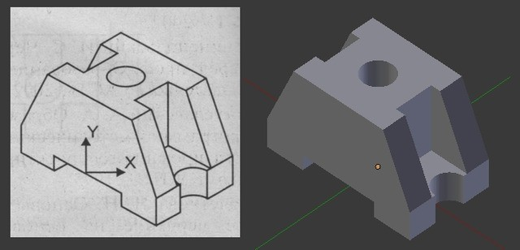
Конечно, существуют специальные системы автоматизированного проектирования для инженерных задач, такие как Kompas-3d, AutoCAD и им подобные, которые включают в себя не только инструменты для моделирования деталей в трехмерном пространстве, но и инструменты для оформления документации. По инженерным возможностям, естественно, Blender с ними не сравниться, так как предназначен для других целей, но точно смоделировать деталь по заданным параметрам, например, для распечатки на 3d принтере не составит особого труда.
Чертеж детали и настройка Blender
Приступим. Для начала нам потребуется чертеж какой-нибудь детали с указанием её параметров, желательно в четырех ортогональных проекциях: спереди, сбоку, сверху и в изометрии. Исходя из представленных размеров детали, для удобства моделирования произведем некоторые расчеты.
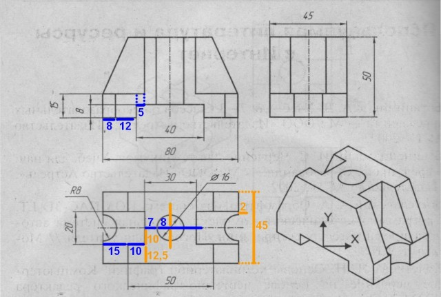
Запускаем Blender. Первое, что необходимо сделать, это изменить единицы измерения. Для этого необходимо в заголовке «Preferences» (Свойства) зайти в контекст «Scene» (Сцена) и во вкладке «Units» (Единицы) выбрать нужные нам единицы измерения:
Выбираем метрические единицы измерения, то есть, активируем «Metric». А масштаб «Scale» меняем на 0,001, так как при моделировании значения будем задавать в миллиметрах.
Сразу под метрическими единицами можно выбрать, в чем будет выражаться поворот объектов: в градусах (Degrees) или в радианах (Radians). Оставляем градусы.
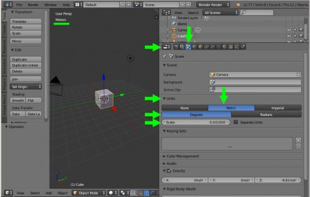
Размеры, привязки, координаты
Также, при точном моделировании очень часто придется переключаться между привязками к сетке в сцене и точкам на объекте. Поэтому сразу активируем привязку к сетке: внизу в заголовке «3D View» нажимаем на значок магнита (привязка к сетке задана по умолчанию).
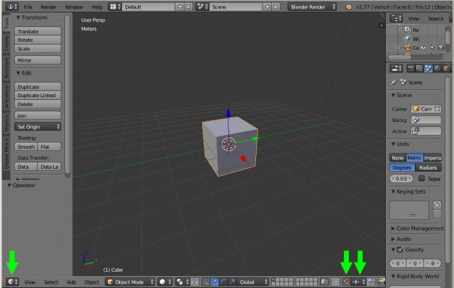
Удаляем все лишнее со сцены: выделяем все объекты в сцене «А» (два раза) – «Х» – «Enter». Переходим на вид сверху «7» и вставляем плоскость: «Shift+A» – «Mesh» – «Plane». Клавишей «N» вызываем информационное окно (справа) выделенного объекта.
Если перейти в режим редактирования («Tab») и выделить любую точку, то во вкладке «Transform» – «Vertex» будут видны координаты этой точки. Далее в тексте вкладка с этими параметрами будет называться «Меню координат».
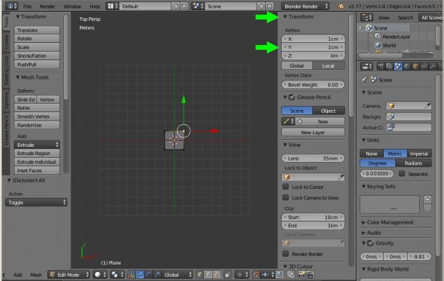
Теперь необходимо сделать так, чтобы были видны размеры ребер, градусы углов и площади поверхностей. Для этого, в этом же информационном окне, внизу находим вкладку «Mesh Display» и активируем «Edge Info» (Данные по ребрам) и «Fase Info» (Данные по площади), поставив галочки в «Length» (Длина) и «Angle» (Угол). Если теперь выделить все точки плоскости, то прямо на ней отобразиться нужная нам информация.
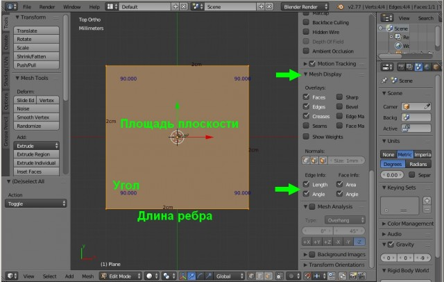
Моделирование детали
Прежде чем начать моделирование, изучим чертеж детали. Как видим, деталь симметрична, то есть достаточно смоделировать 1/4 её часть (показана желтым цветом), а затем применить модификатор «Mirror» (Зеркало) по двум осям X и Y.
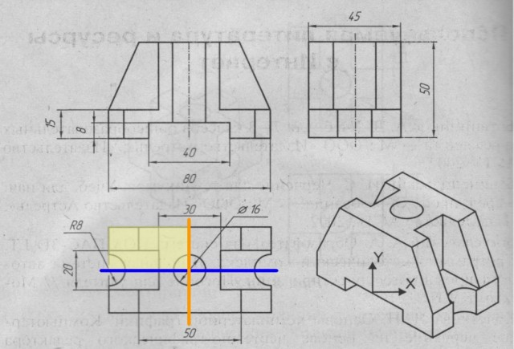
Итак, перейдем непосредственно к моделированию. На виде сверху «7» разделим плоскость в Blender на четыре части: «W» – «Subdivide». Так как после моделирования 1/4 части модели нужно будет отзеркалить по двум осям, то оставляем только точки верхнего левого квадрата, остальные удаляем.
Построение детали начнем с самой нижней её части, которую можно представить шестью точками. Если за начало координат принять центр детали, то координаты этих точек будут следующими (X,Y в миллиметрах): 1=-20,0; 2=-32,0; 3=-32,8; 4=-40,8; 5=-40,10; 6=-20,10. На рисунке точки представлены красным цветом, размеры длины – синим, ширины – оранжевым.
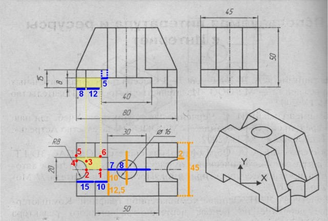
Разделим плоскость в Blender еще на четыре части («W» – «Subdivide»), таким образом, получаем девять точек. Удаляем нижнюю слева.
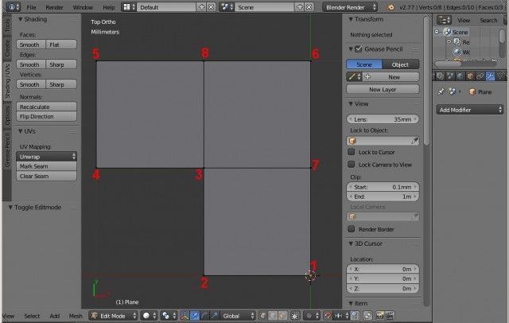
Оставшимся восьми точкам в «Меню координат» вводим следующие координаты: первым шести те, которые приведены выше, 7=-20,8 и 8=-32,10. Получаем следующий результат:
Теперь, согласно чертежам, необходимо придать толщину этой части равную 8 мм. Для этого переходим на вид спереди «1», выделяем все точки и выдавливаем «Е» их по оси Z до 8мм. Либо просто указываем это значение в «Меню координат».
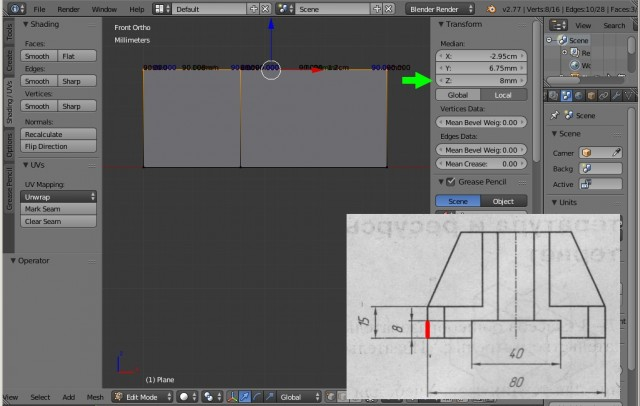
Далее создадим дугу радиусом 8мм. Для этого выбираем грань, которая начинается от точки 3, переходим на вид сверху «7», вызываем меню «Special» клавишей «W» и выбираем «Bevel» (Создание фаски). Вытягиваем до самых крайних точек, затем колёсиком мыши добавляем грани (чем больше граней, тем ровнее радиус).
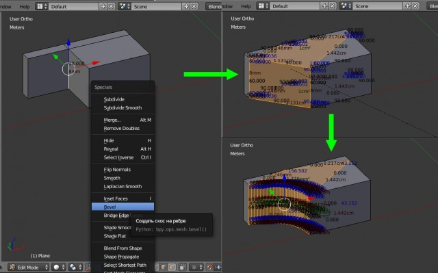
Соединим вершины, которые легли друг на друга: «W» – «Remove Doubles» (Удалить Дубли). Теперь измерим полученный радиус, для этого выделим любую точку, продублируем её «Shift+D» и зададим ей в «Меню координат» следующие значения X,Y,Z=-40,0,0. Теперь изменим привязку с сетки на точки и выдавим «Е» продублированную точку до точек, расположенных на дуге.
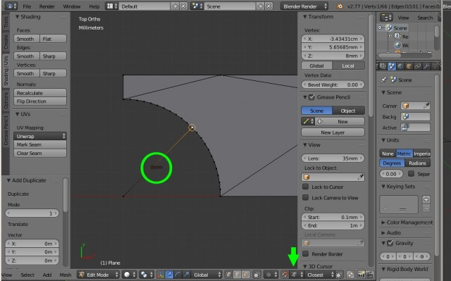
Таким образом, мы увидим длину радиуса равную 8 мм. После этого удаляем точки, созданные для измерения. Данным способом можно измерять параметры модели в процессе её создания.
Работаем с сеткой модели
Теперь необходимо сетку модели привести к более удобному виду с ребрами, расположенными под прямыми углами. Легче всего это сделать при помощи инструмента «Knife» (Нож), который вызывается клавишей «К». Режем модель от точки 2 к точке 8 (чтобы разрезать плоскость необходимо нажать «Enter») и от точки 4 к точке 7. Затем выделяем лишние грани и убираем их: «X» – «Dissolve Edges» (Растворить Ребра). То же самое проделываем и для нижней поверхности модели. Так же необходимо удалить боковую поверхность: «X» – «Faces». В итоге получим вот такой результат.
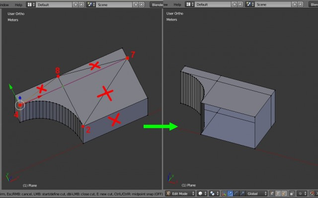
Включаем снова привязку к сетке. Выделяем боковую правую поверхность и выдавливаем («Е») её вправо (по оси Y) на 12,5 мм, то есть к имеющейся толщине 10мм прибавляем 12,5мм, получаем 22,5мм. Выдавливаем до этого значения в «Меню координат», либо просто вбиваем его туда.
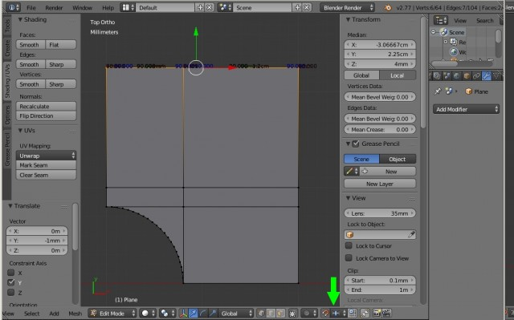
Далее выделяем всю верхнюю поверхность и выдавливаем её на 7мм по оси Z, то есть, к имеющейся толщине 8мм прибавляем 7мм, таким образом, получим значение равное 15мм.
После этого, верхнюю заднюю поверхность выдавливаем два раза: на 5 и на 7мм. В данном случае к имеющейся толщине -20мм необходимо сначала прибавить 5мм (X=-20+5=-15мм), а затем ещё 7мм (Х=-15+7=-8мм). После этого, удалив лишние боковые плоскости, получим следующий результат.
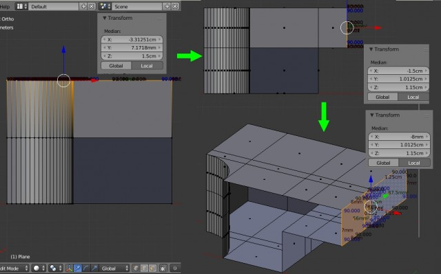
Теперь, согласно чертежам, выделяем нужные поверхности и выдавливаем их на высоту 35мм, то есть к имеющейся толщине 15мм прибавляем 35мм. Полученное значение (50мм) указываем в «Меню координат» по оси Z. Удаляем лишние плоскости.
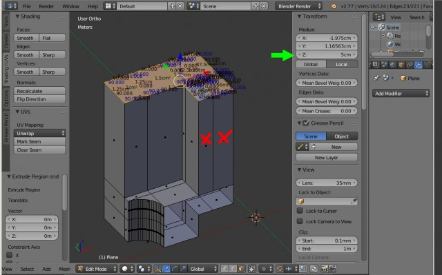
Далее делаем скос, который располагается на расстоянии -25мм по оси X. Для этого выделяем три ребра, которые расположены на расстоянии -32мм и задаем им вышеуказанное значение в «Меню координат» по оси X.
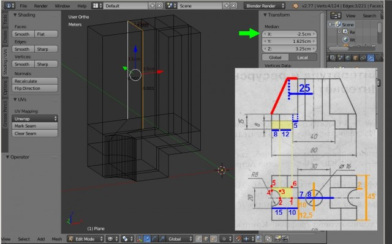
Скос делается очень просто. Выделяем верхнюю грань и убираем её через «X» – «Dissolve Edges».
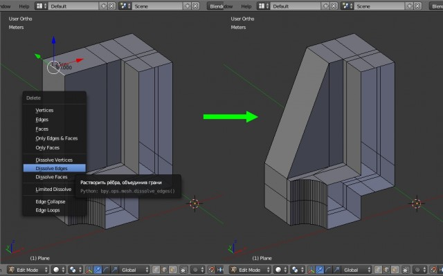
Теперь займемся центральным отверстием. Выдавливаем часть торцевой поверхности, отмеченной на рисунке, на радиус отверстия (8мм), то есть значение по оси X будет равно 0мм.
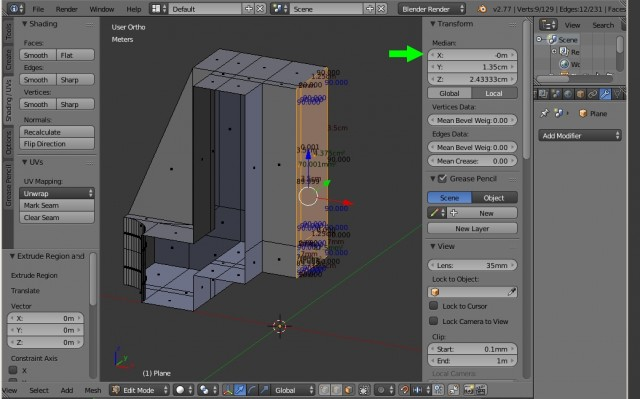
Затем, как и при создании дуги ранее, выделяем ребра и через меню «Special» (клавиша «W») создаем фаску командой «Bevel», а при помощи колеса мыши устанавливаем количество граней. Следует напомнить, что чем больше число граней, тем ровнее получится радиус.
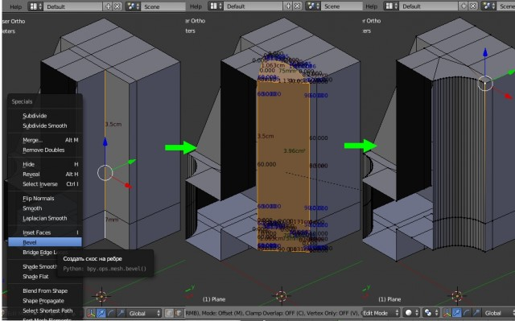
После этого выделяем все точки и удаляем вершины лежащие друг на друге: «А» – «Remove Doubles». Удаляем торцевые плоскости («Х» – «Faces») и, желательно, подкорректировать сетку модели как это делали ранее при помощи инструмента «Knife» (клавиша «К»). Получим следующий результат.
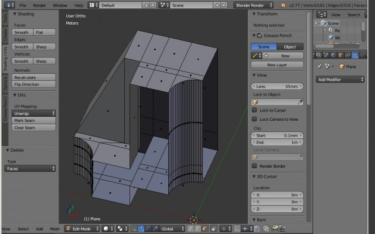
Теперь, осталось только отзеркалить модель по осям Х и Y, а затем соединить полученные части. Для этого выходим из режима редактирования «Tab» и в заголовке «Preferences» (Свойства), в контексте «Modifiers» (Модификаторы) во вкладке «Add Modifier» (Добавить Модификатор) выбираем модификатор «Mirror» (Зеркало). Где ставим галочки X и Y под надписью «Axis» (Оси). Нажимаем кнопку «Apply» (Применить). Модель готова.
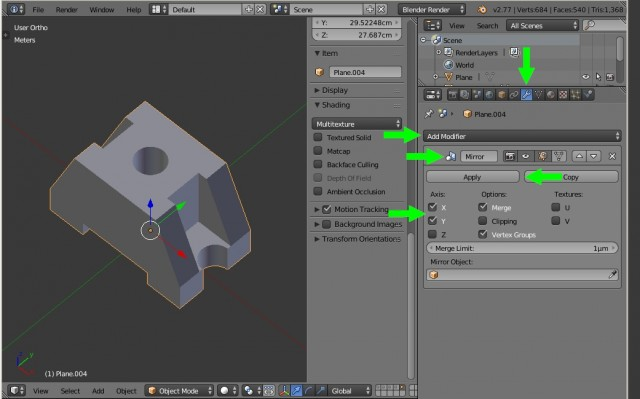
Заключение
В заключении следует отметить, что данный способ точного построения модели по заданным параметрам не является единственным. Так как порой для различных целей приходится моделировать объекты с одинаковой геометрией, но разной полигональной сеткой. В данном случае показан лишь пример работы с координатами точек объекта.
Напомним, что в предыдущем уроке по Blender, рассказывается как установить фоновые изображения в каждом виде (окне проекции). Это полезно для тех, кто занимается моделированием техники по чертежам, референсным изображениям.